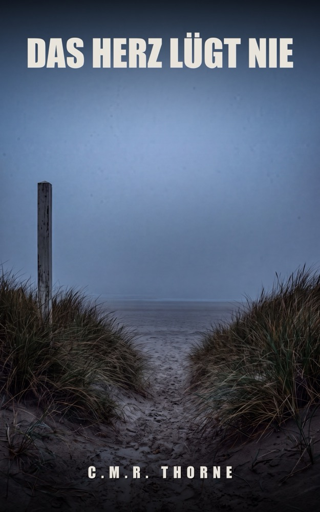
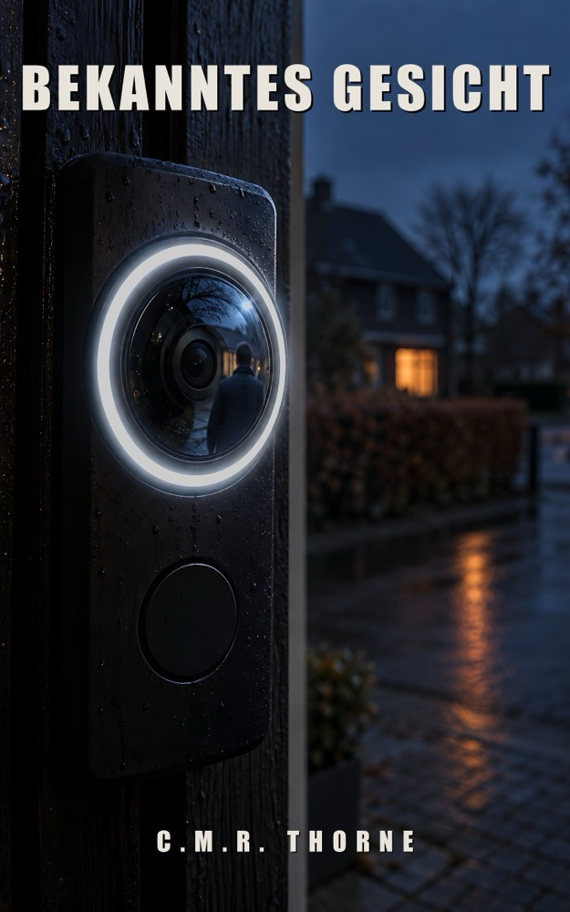

FALL 01
Jetzt erhältlich
Das Haus sieht alles
Die Haustür öffnete sich um 3:12 Uhr. Während er schlief.
Bei Amazon ansehen LOWLANDSPRESS
LOWLANDSPRESSEin Buch wählen
Die Haustür öffnete sich um 3:12 Uhr. Während er schlief.
Bei Amazon ansehen
Fünf Tote. Eine gefälschte Unterschrift. Und ein Fall, der acht Jahre begraben blieb.
Bei Amazon ansehen
Seine Uhr hat den letzten Puls aufgeschrieben. Das Herz in dieser Kurve schlägt nicht wie das von Bram.
Bei Amazon ansehen
Ein DNA-Test zeigt: Der Junge an ihrem Küchentisch ist nicht der Junge, den sie zur Welt gebracht hat.
Bei Amazon ansehen
Ein alter Dashcam-Clip beweist: Die Ermittlungen zum Tod von Niek Veldkamp beruhen auf der falschen Uhrzeit.

Die Türklingel der Nachbarin setzt einen Namen unter den Mann auf der Treppe. Nur ist er es nicht.
Bei Amazon ansehenDas Taschenbuch ist erschienen. Das E-Book folgt in Kürze.
Ein Schulausweis hat festgehalten, wer an jenem Nachmittag hineinging. Ihr eigener Scan steht auf der falschen Uhrzeit.
Band sieben entsteht gerade. Niederländischer Arbeitstitel. Ein Erscheinungstermin steht noch nicht fest.